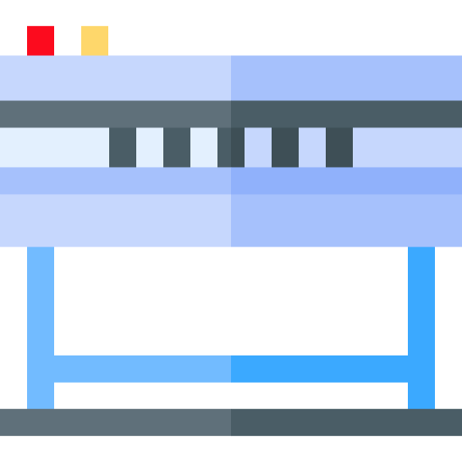
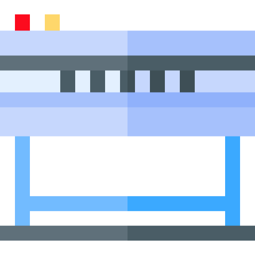

Color Management Workflow
Instructions
1. Drag the equipment icons, arrows, and profiles around to create a color-managed workflow.
2. In the table below, identify each profile as source, destination, simulation, or multiple types.
3. Save a screen capture of your completed diagram, as the positions will reset when the page is reloaded.


 


Camera Profile
Working Space Profile
Monitor Profile
Proofer Profile
Press Profile
| Icons courtesy of flaticon.com |